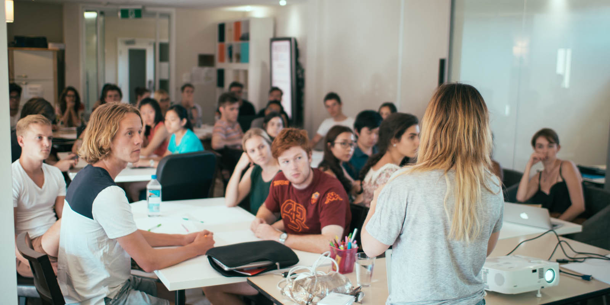

The inspiration and knowledge needed to embark on the journey of entrepreneurship often exists outside traditional education.
To be successful, an entrepreneur often needs to have strong support networks, mentors and practical experiences.
Traditional education is often great at teaching students how to do a job, but tends to fail at teaching students how to create a job.